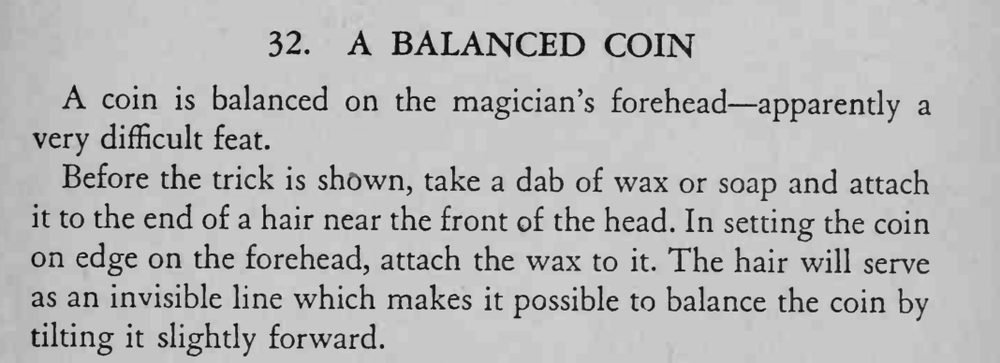

硬币竖着稳稳地平衡在魔术师的额头上，看上去像是极难完成的绝活。
头发要选靠近前额、不易被察觉的一根，蜡只需极少量。

coin is balanced on the magician's forehead apparently a very difficult feat. Before the trick is shown, take a dab of wax or soap and attach it to the end of a hair near the front of the head. In setting the coin on edge on the forehead, attach the wax to it. The hair will serve as an invisible line which makes it possible to balance the coin by tilting it slightly forward.